nb-ui 改名与合并：外观变化
w00029 t03，已合入 master（dc2d2f09b）。这一批大部分是改名，界面不变；这里只列外观有变化的四处，每处左边是改动前（master 64d7e884e），右边是改动后。都是 Lab 里的真实组件，夜间配色。
没有截图的一处：dev-panel 顶栏的横幅也改用了 Banner，样子与下面第 2 节相同；“知道了”从文字按钮变成了右侧的关闭按钮，读屏念的名字仍是“知道了”。
1. 编辑组顶部的状态条
原来是手写的一行彩色文字，现在用 nb-ui 的 Banner：有色调底色与图标，正文用次要文字色。冲突、写不出、保存失败用红色（读屏立即播报），文件已删除、磁盘有变化用黄色。
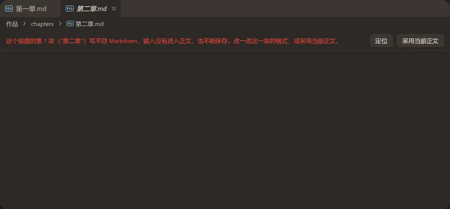
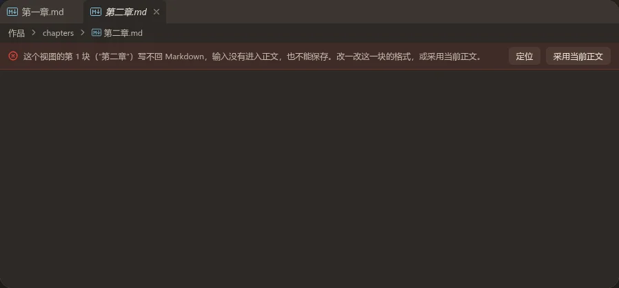
编辑组最窄（220px）时差别最大：原来按钮占住右边，文字被挤成一列；现在文字放不下就把按钮整组换到下一行。
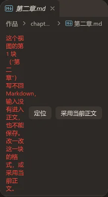
2. Banner 本身
原来没有人用它。现在改成紧凑排版（12px 字），动作区可以放几个按钮，图标可以换成说明具体事情的（第三张用的是刷新图标）。
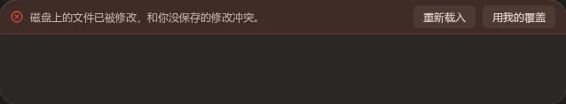
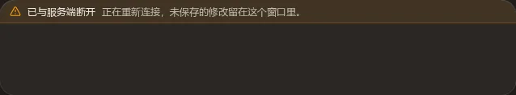
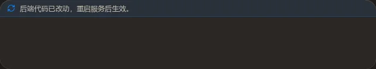
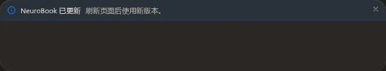
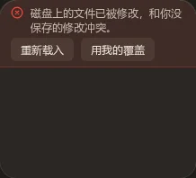
3. JSON 查看器的模式切换
原来用 ToggleGroup 的单选（再点一次当前项会清空，代码里要挡），现在用 SegmentedControl：选中项是实心的强调色块，切换时滑动。
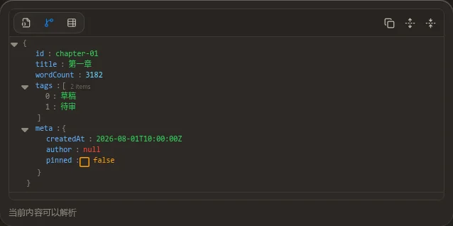
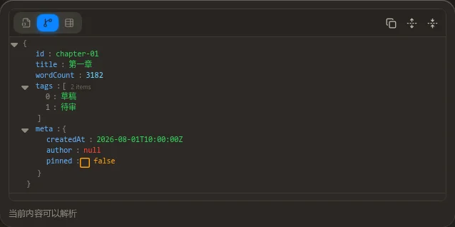
4. Lab 顶栏的画布宽度
同样从 ToggleGroup 换成 SegmentedControl，和同一条栏上的场景切换一个样子。第二行是手动拖出的尺寸（不属于任何预设），三项都不选中。
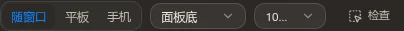
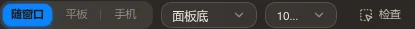
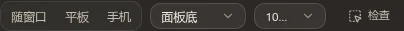
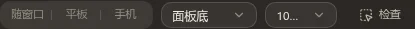
ToggleGroup 自己的样子没变，只是去掉了单选，现在只做可叠加的开关：
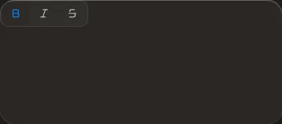